VISION丹波の食材を全国、世界へ
MISSION食の群戦略と循環型農業の確立

お客様が本当に感動するのは「そこそこの商品」ではなく、圧倒的なナンバー1です。但馬牛、丹波栗――それぞれのジャンルで世界一の品質を追求し、鋭く尖った専門店の集まり（群）をつくる。それが私たちの「食の群戦略」です。
そしてもうひとつが「循環型農業」。耕作放棄地を牧草地に戻し、地域の草で牛を育て、牛の堆肥を土へ還す。外から持ち込まず、無駄を出さない循環を、この但馬・丹波の地で完成させます。
現場で土に触れ、データで品質を磨く。地域の農家さんと一緒に、農業を稼げる仕事にしていきます。
外から持ち込まず、無駄を出さない。
草と牛と土と米が、ひとつの輪でつながっています。
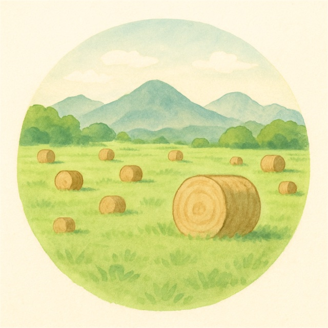
牧草を育てる耕作放棄地を牧草地に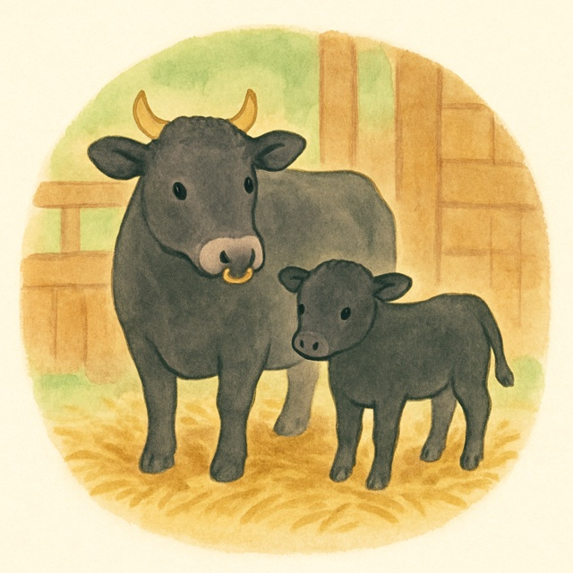
但馬牛が食べる輸入飼料にたよらない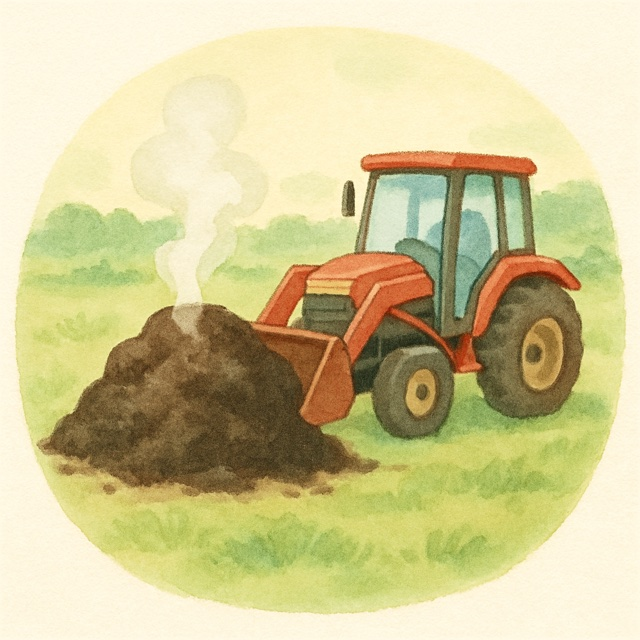
堆肥をつくる牛ふんともみ殻から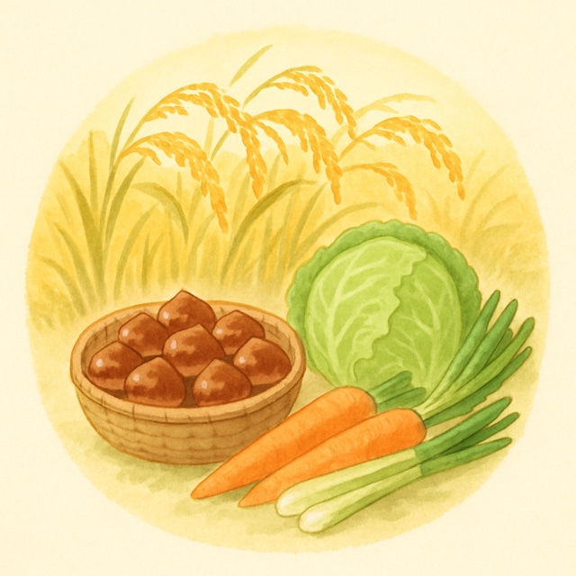
米・栗・野菜堆肥で土をつくって育てる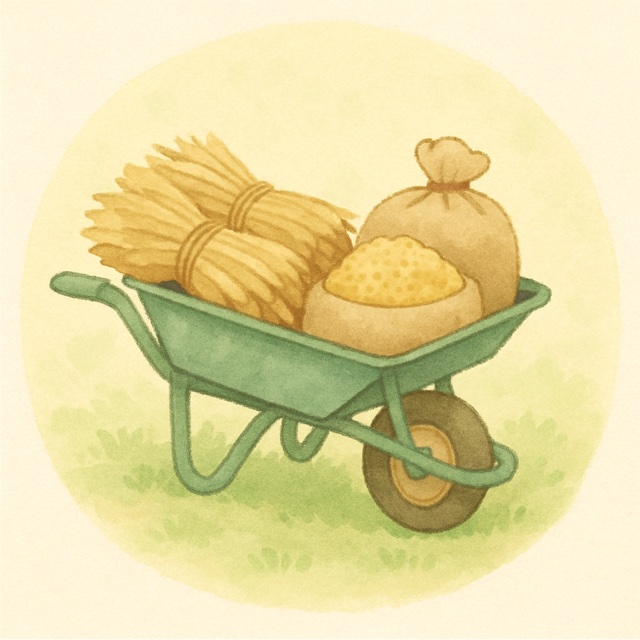
稲わら・もみ殻牛の寝床に、そして堆肥へ自然から搾取するのではなく、自然を再生し、
より豊かな状態で次の世代へ手渡す。
「関わるすべてに喜びを」。この言葉には、いまここにいる人だけでなく、
海や大地、そして未来の子どもたちへの約束が込められています。
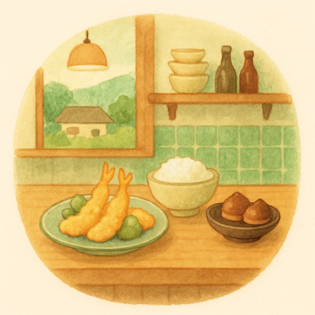
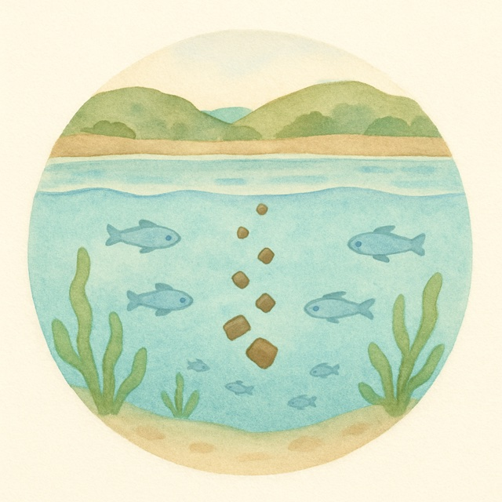

グループ会社の丹波土匠で、私たちが手がけています。耕作放棄地や水田で牧草をつくり、2026年は約33ha・約1,000ロール。国産の牧草を多くの農家さんに使ってもらうことが目標です。

但馬牛の牛ふんともみ殻でつくる堆肥。土壌医の資格を持つ仲間が品質を管理し、丹波市内や朝来市の農家さんの田畑へ散布しています。

2019年に栗畑を譲り受けて、私たちの栗づくりが始まりました。自社の栗園の栗と、地域の農家さんから買い取る栗を合わせて年約2t。むき栗やペーストに加工し、一流の飲食店や和菓子店へ届けています。海外への出荷も準備中です。
栗原の丹波栗のページへ →
私たちが育てた食材を、自分たちの加工場で下ごしらえしてグループの飲食店へ。丹波栗の渋皮煮なども手づくりしています。
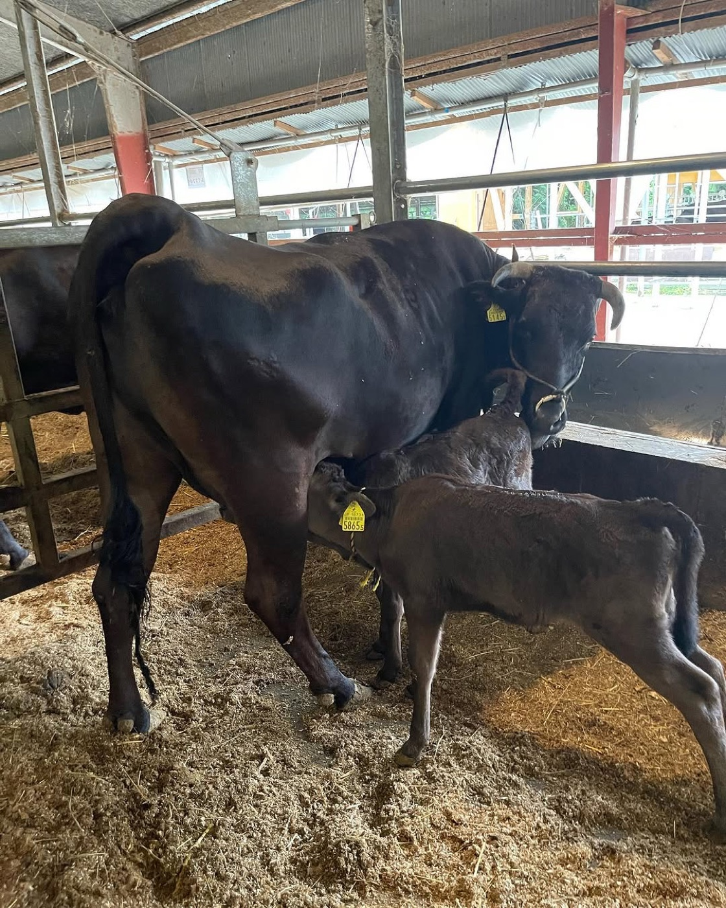
牛を飼い始めたころ、私たちは畜産のことを何も知りませんでした。たくさんの方に教えてもらい、失敗もしながら、一頭一頭と向き合ってきました。
子牛は早く乳離れさせず、できるだけ母牛の乳で育てます。最初にしっかり免疫をつけることが、病気に強い牛への近道だと考えています。
初めてお産をする母牛は、個室でゆったりと。落ち着いてお産に臨めるようにしています。
毎日こまめに顔を見て、小さな変化にすぐ気づけるように。牛にストレスのない環境で、市場で「ええ牛や」と言ってもらえる子牛を育てています。
― 代表取締役 大塩 敦史
丹匠グループ @tansho.group 牛・田んぼ・栗、農場の毎日
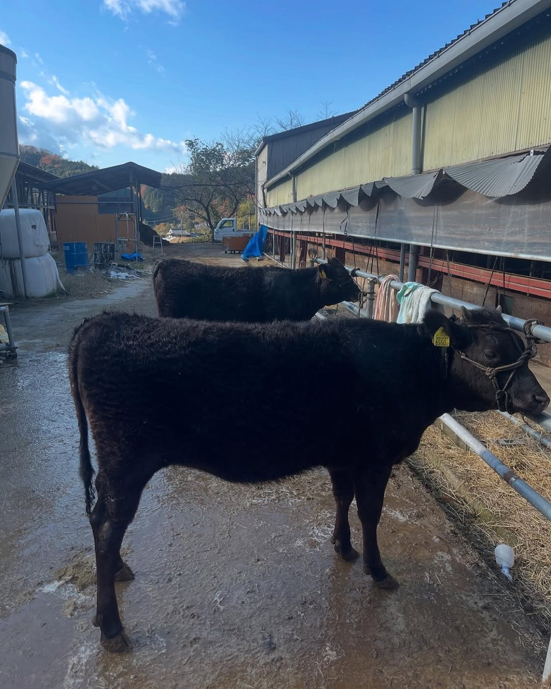
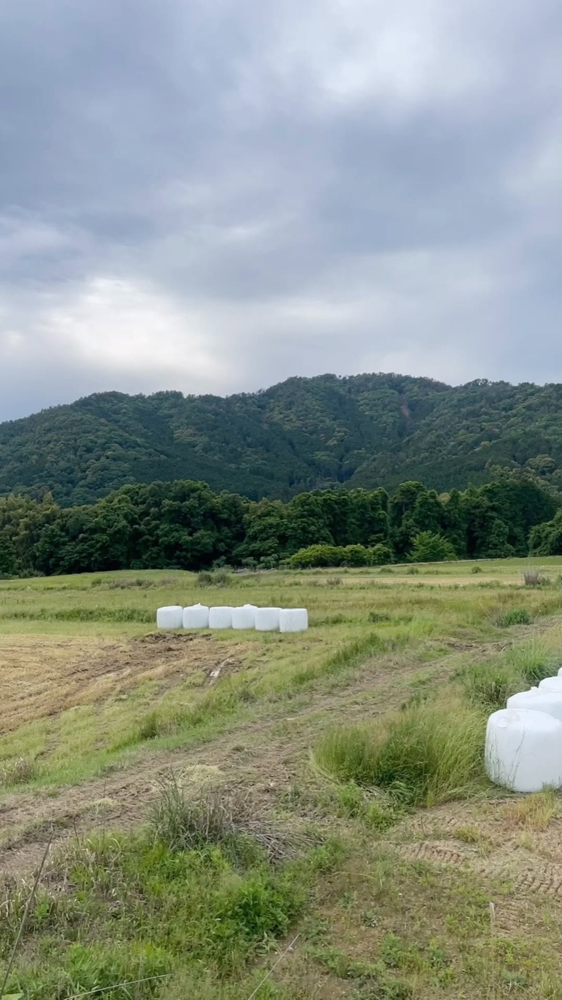
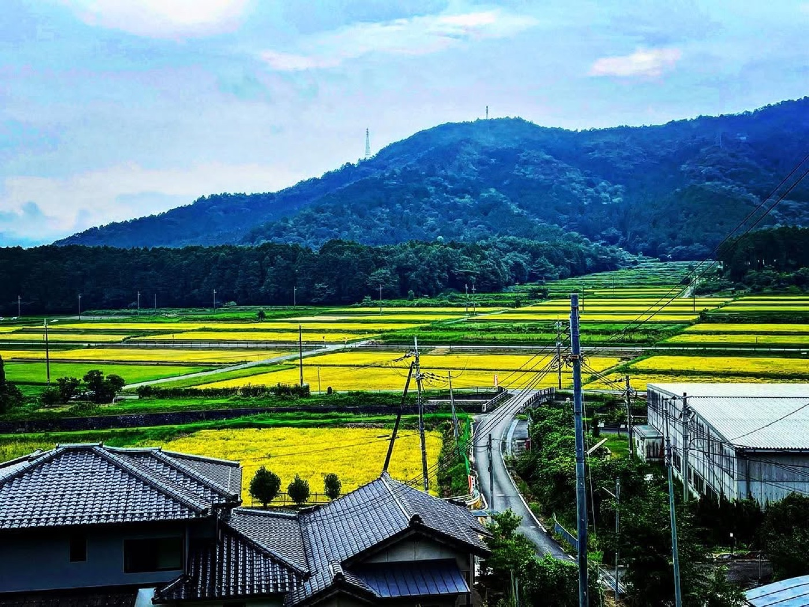
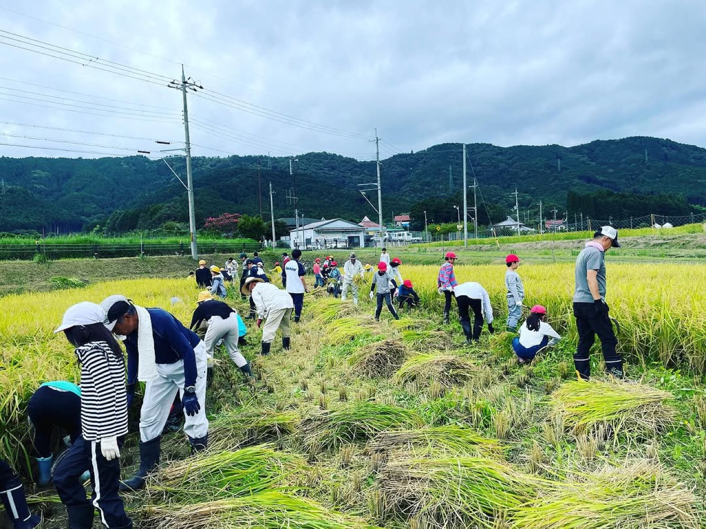
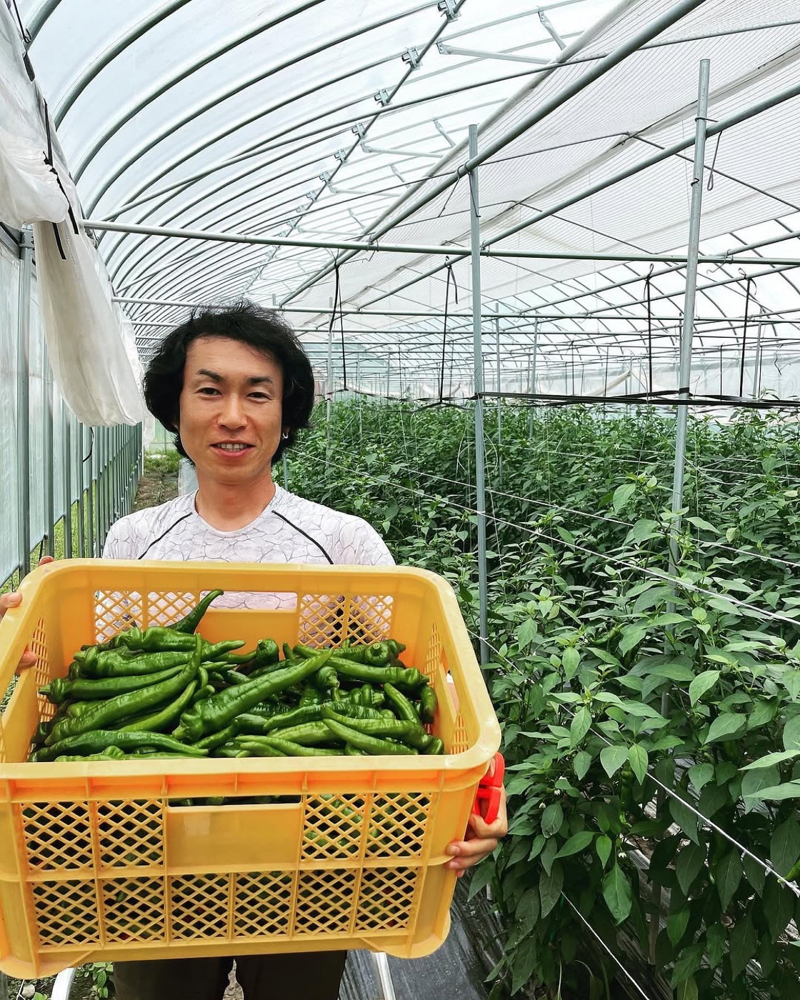

栗原優介「関わるすべてに喜びを。」 農業の現場を、農家目線で発信しています
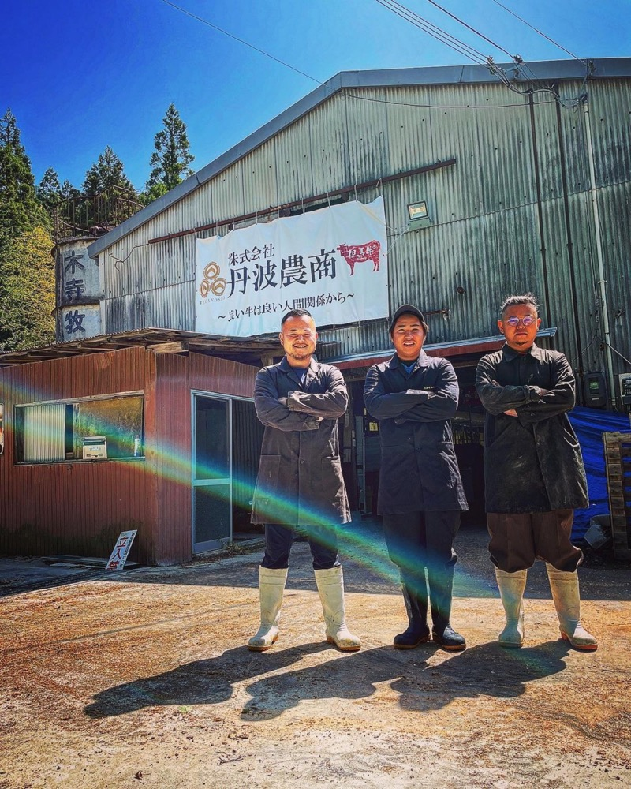
丹波市市島町出身。高校卒業後、兄が営む飲食店に入社し、自分の料理でお客様に喜んでもらう楽しさを知る。食材から自分でつくりたいと地元に戻り、県内の牧場で修行。2019年に独立。
丹波市市島町出身。大学卒業後、商社で営業として働くうち、自信を持って売れるものを自分でつくりたいと就農を決意。日本一の米農家での修行を経て、従兄の大塩と2019年に会社を設立。株式会社丹波土匠の代表も務める。
秋山 龍の輔 牧草・米
栗原 直人 堆肥（土壌医検定2級）
栗原 亜実 食品加工・栗の販売
| 会社名 | 株式会社丹波農商 |
|---|---|
| 代表取締役 | 大塩 敦史 |
| 取締役 | 栗原 優介 |
| 所在地 | 兵庫県丹波市市島町下竹田2055-3 |
| 電話 | 0795-86-0068 |
| 設立 | 2019年10月 |
| 資本金 | 1,000万円 |
| 事業 | 但馬牛の繁殖、米・丹波栗・野菜の生産、堆肥の製造・散布、稲作の作業受託、食品加工 |
| グループ会社 | 株式会社丹波土匠（牧草の生産） 株式会社アゲル（飲食店「天ぷらとワイン大塩」ほか） |
丹波農商 牧場物語 ― 私たちの農業経営を、スマホで遊べるゲームにしました
現金1,000万円と田んぼ1枚から始めて、お米・牛・牧草・丹波栗・野菜を育て、会社を大きくしていく農業経営シミュレーションです。田植えや稲刈りの季節、牛の世話、決算書や補助金まで、丹波農商の毎日をそのままゲームにしました。
📱 ホーム画面に追加すると、アプリのように全画面で遊べます。
iPhone：Safariで開いて 共有ボタン →「ホーム画面に追加」
Android：Chromeで開いて ︙ →「ホーム画面に追加」
パソコンの方は、QRコードをスマホで読み取ってください。
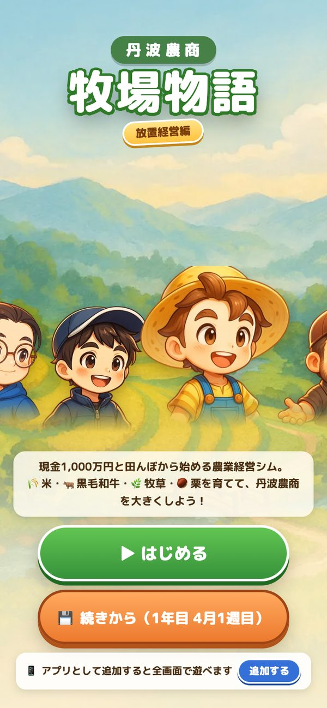
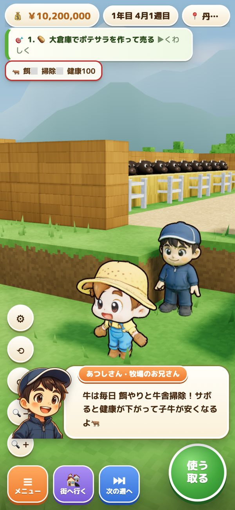
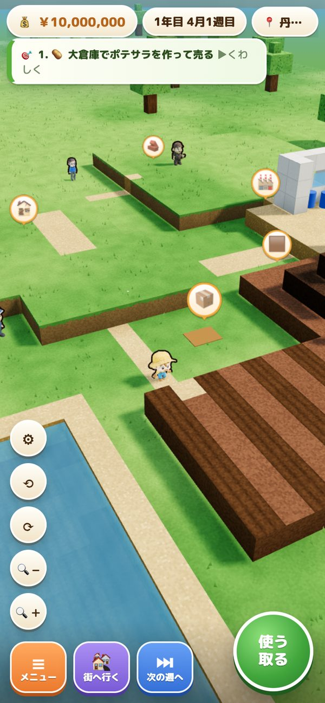